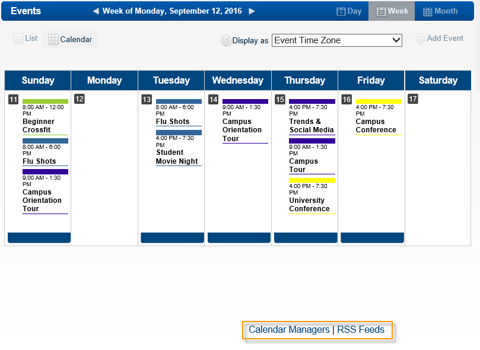
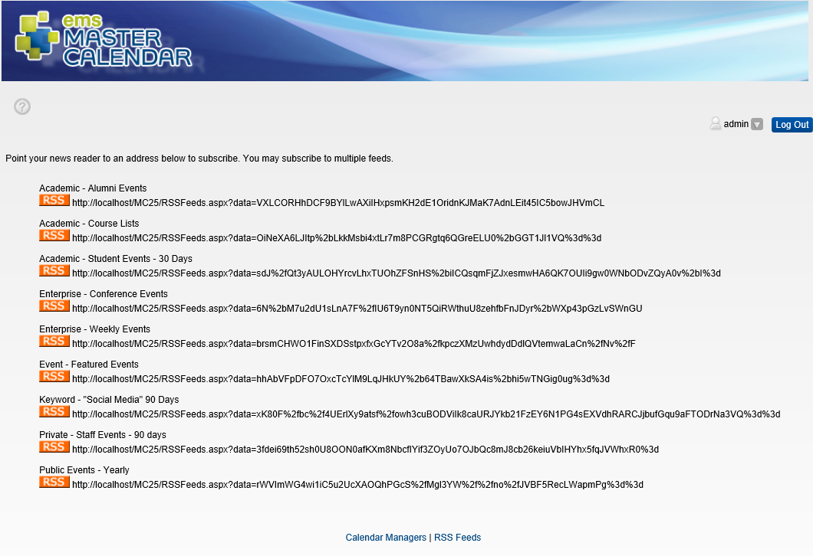

If your site administrator has configured RSS feeds, the RSS Feeds hyperlink will be available at the bottom of all pages in EMS Master Calendar.

Click on the RSS button below a feed to open the feed.
The first time you click the RSS Feeds link, you might be prompted to download an RSS feed reader.
